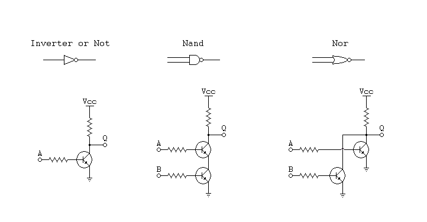

Transistors as Switches
A transistor is a three terminal device in which a small electrical signal on one terminal controls the flow of current between the other two. In a digital system, transistors are driven in either cutoff or saturation mode to produce the binary behavior of an on/off switch. The example below shows an NPN transistor used as a switch on the low-side of the LED load. That is, the transistor is placed between the load and ground.

A PNP transistor is suitable as a switch on the high-side of a load (here a motor), between VCC and the load, as shown in the example below:

Both of the preceding circuits use a base resistor in series to protect the transistor from excess base current.
CMOS
MOSFETs can also be used as digital switches. In modern digital electronics, MOSFETs are preferred, because they operate with very low power consumption, due to their insulated gate and that their switching operation is voltage-controlled rather than current-controlled.
Building a logic gate
Pullup resistor
Thanks to their switching behavior, transistors can be used to build logic gates, but we want the output of a logic gate to be either High or Low voltage. A switch alone does not produce a High or Low voltage by itself, it merely allows or blocks current flow. To get a High or Low output voltage from a switch or transistor, we need to use a pullup resistor. The diagrams below show a switch on the low-side of its output terminal. Thus, when the switch is closed, the output node is grounded (Logic Low). When the switch is open, if there were no pullup resistor, the output would be floating. The pullup resistor pulls the output voltage to VCC to represent Logic High when the switch is open.

Single transistor inverter
By using an output pullup resistor, a logical inverter can be implemented with just a single transistor.

Transistor Gates
Transistor switches can be combined to implement digital logic gates

To build a 2-input NAND gate, you can connect the channels of 2 NPN transistors in series, on the low side of the output, so that current flows through the pullup resistor only if both input are High and both transistors conduct.
Likewise to build a 2-input NOR gate, connect the channels of the 2 transistors in parallel, so that current flows through the pullup resistor when either of the two inputs are High.
Totem Pole Output
The pullup resistor serves an important function, but as a passive element it also has some drawbacks. When current flows through it, it wastes power, and limits the amount of current that can be sourced to the output load. In the Totem Pole Output circuit, an "active pullup" solves these problems with a high-side switch instead of a pullup resistor. In this example, the low-side switch is "normally open" while the high-side switch is "normally closed". This means that only one of the two switches is closed at a time, depending on the input value. This allows the output to work as a push-pull stage, either sourcing current from VCC or sinking it to GND.